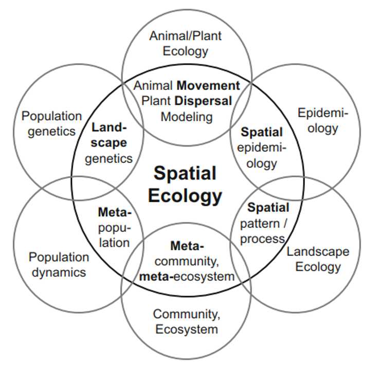
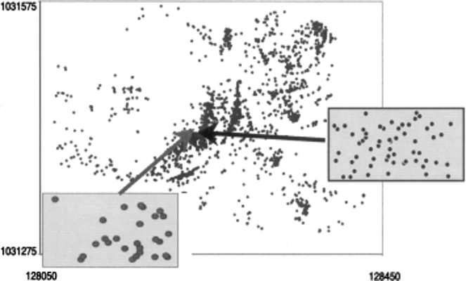
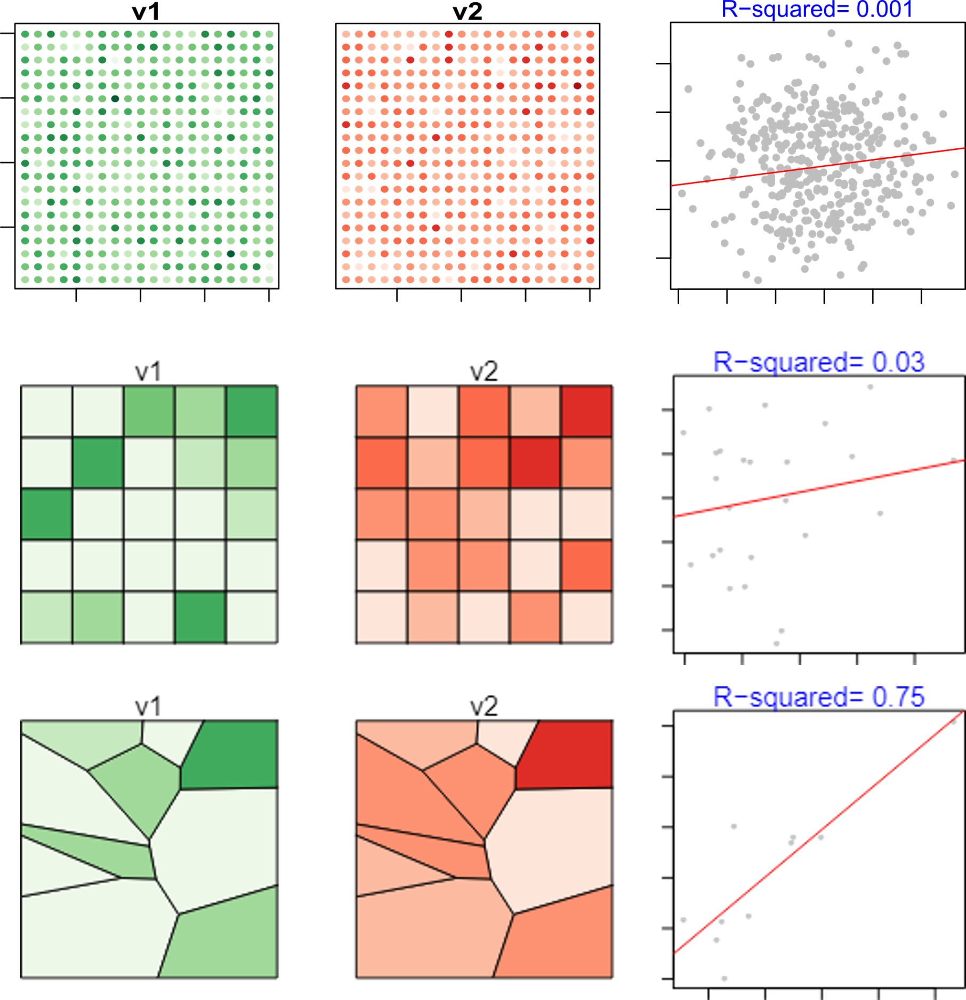

The Importance of Space in Ecology and Conservation
The term Ecology was first coined by the naturalist Ernest Haeckel in 1866, defining it as the scientific study of the relationships between organisms and their environment. A more contemporary definition describes ecology as:
“The scientific study of the distribution and abundance of organisms and the interactions that determine distribution and abundance”(Begon and Townsend 2021).
Statistical ecology builds upon this foundation by integrating mathematical models with associated measures of probabilistic uncertainty to study ecological systems (Gilbert et al. 2024). Space is inherent to all ecological processes, influencing dynamics such as migration, dispersal, and species interactions. Spatial ecology aims to understand how these processes shape species distributions and dynamics across space. Its focus on the direct and indirect effects of space on biodiversity and ecosystem functioning has given rise to multiple subdisciplines within the life sciences, including landscape ecology, epidemiology, and animal movement, etc (Figure 1).

Figure 1: Spatial subdisciplines derived from ecological disciplines using a spatial ecology framework (taken from (Fletcher and Fortin 2018).
To fully understand the relationship between space and ecological patterns and processes, the integration of statistical models is essential. These models not only help explain spatial dynamics but also provide the necessary framework to address key aspects of conservation. This includes mapping biodiversity and ecosystem services, providing insight into mitigating the impacts of environmental change, supporting effective prioritization of conservation areas, and establishing the foundation for developing tools and models that guide conservation efforts such as the global goal for halting biodiversity loss proposed by the Nature Positive initiative (Figure 2)
Figure 2: A measurable global goal for nature. Source: (Locke et al. 2021)
Spatial data are data which have any form of geographical information attached to them. The emergence of modelling frameworks for spatial ecology has been facilitated by the rise of new technologies and data collection systems like aerial photographs, GPS tracking, satellite imagery, and biologging devices.
GPS tags for survey and monitoring waterbirds movement
Most of environmental variables and ecological processes of interest will vary over space to some degree and we will typically use this spatial information to help us understand the relationship between our data points. Furthermore, incorporating space into statistical modelling approaches has driven the formulation of novel ecological questions and the development of new analytical methods to address them.
The overall goal of any piece of spatial analysis is to understand the spatial patterns in our data. This could involve:
Estimating differences in mean, variance or some other summary statistic over space.
Predicting the value at some unobserved location.
Identifying hotspot with high (or low) value compared to the rest of the region.
However, before jumping into modelling complex spatial ecological processes we need to quantify the spatial patterns of such processes.
Quantifying Spatial Patterns in Ecological Data
Spatial scales
Scales describe the spatial and temporal dimensions at which an ecological process occurs. Many ecological patterns and processes occur at different spatial and temporal scales and thus, understanding and quantifying these scales is essential to provide an accurate intrepretation of the ecological processes we aimed to study.
The spatial scale is often described by the grain (a.k.a. spatialresolution) and the extent. The former refersto the finest spatial unit of measurement for a given process, whereas the later refer to the total length or area of the study. The ratio between these two measurements is knows as Scope.
There is typically a trade-off between the grain and the extent, mainly due to practicality. For example, it can be costly to work at large extents while collecting data at fine grain sizes. But also, some of the processes occurring at these finer scales become simply noise when we look at systems at larger extents.
In spatial ecology, the scale at which an ecological process occur can have a major impact on the interpretation of our analysis. For example, Figure 3 shows the locations of isopods burrows in the northern Negev Desert, Israel. If we look at the complete data set we can see a strong aggregation pattern. However, when focusing on two subsets with smaller extents, the observed patterns shift, ranging from random to aggregated.

Figure 3: Isopod burrow data with n=2015 individual burrows in a study area with an extent of 75 600 m\(^2\). Inset maps show two subsets with reduced extent of 6.4 m\(^2\) each. Source: (Dungan et al. 2002)
The spatial scale of analysis is crucial in ecological and environmental studies, as it can significantly influence the patterns we observe and the conclusions we draw. For example, changing the grain of the study (while holding the extent constant) can introduce bias and uncertainty in the observed ecological patterns. This is because aggregated data can have different properties than the sample data from which they were derived, i.e. the assumption that a relationships exists one level of aggregation does not necesarilly hold at another level of aggregation, particularly in situations where data are aggregated into irregular sampling units (modifiable areal unit problem -MAUP). This is illustrated in figure Figure 4, where two variables (v1 and v2) recorded on uniform point level show little correlation. As we aggregate the values on a larger grain size, we get a slight increase in the slope and \(R^2\) values. Now if we aggregate the same point data using the non-homogeneous aggregation scheme now v1 and v2 become highly correlated.

Figure 4: Plots of variables v1 and v2 for each individual in the survey and summarized using a uniform and non-uniform aggregation scheme
Thus, if the data we had at hand came from the non-uniform aggregation scheme, it would be wrong to assume that a correlation also exists on an individual-level data. In ecology this is knows as ecological fallacy, which arises when incorrect inferences about individual sample units are made based on aggregated data.
For example, aggregating species abundance (counts) data at a national scale might obscure local hotspots of biodiversity observed at finer scales. Results depend on how the areas are divided, even if the total number of zones remains constant. Different arrangements of the same spatial units can lead to different conclusions. When individual-level data is grouped, the variability within units is lost, which can mask finer-scale patterns or exaggerate certain trends. As consequence, conservation strategies should consider the spatial scale for effective conservation decisions.
Multiscale modelling: Spatial Influence of Landscape
Considering the significant influence of scale on ecological patterns and the conservation challenges it imposes, how can the spatial scale be effectively integrated into a study design?
Landscape studies often explore the impact of surrounding landscapes on abiotic or biotic responses (e.g., water quality, species abundance) at specific locations selected for their differing landscape features, such as levels of agricultural intensity. A key challenge in these studies is to identify the spatial scale at which these landscape factors affect the response variable.
Multiscale modeling has become a popular approach to evaluate environmental conditions across various scales by modifying the grain or extent to identify which scale best explains the ecological responses of interest.
Researchers traditionally determine the spatial extent based on known biological traits of the study organism, e.g. based on the organisms dispersal range. However, very often the relevant scale is unclear. Thus, researchers often analyze landscape variables across multiple spatial extents to identify the scale that best fits the data. The goal is to interpret the landscape effects at different levels in an organizational hierarchy and assess their influence on the ecological process of interest
Figure 5: Illustration of spatial multiscale scenario where the (a) extend and/or (b) grain of two environmental conditions varied. Source: (Fletcher and Fortin 2018)
The two most commonly used methods for estimating landscape effects are threshold and distance-weighted methods. Threshold methods compare landscape variables across multiple buffer sizes centred at specifc habitat patches, and then select the scale that best fits the data. On the other hand, distance-weighted approaches assign continuous weights to landscape variables, giving greater importance to areas closer to the study sites and less to those farther away. To better understand how these two approaches work, lets look at the following example.
Case Study
Measuring the scale effect of land cover on the distribution of Plestiodon fasciatus
In this example we will use the National Land Cover Database (NLCD) and the presence/absence records of Plestiodon fasciatus (a.k.a. five-lined skink), a common lizard sampled with drift-fence arrays in managed forests in the Southeast USA.
The NLCD is a land cover data with a grain of \(30 \times 30~m\) that classifies land cover into 20 categories. For this example we will only look at forest land-cover data represented by landscape types 41, 42 and 43 (deciduous, evergreen and mixed forests respectively) (Figure 6).
P. fasciatus lizards were sampled with drift-fences at 78 sites. At each site, two drift fences were set up along two \(200 \times 10~ m\) transects within forest patches (equivalent to 4 ha), with one transect located along the edge and a second located in the interior of the sites. Drift fences were opened for 3 days each month, April to July, 2013-2015. The presence/absence data of P. fasciatus is shown in Figure 6.
Figure 6: NLCD landscape categories and sites were the presence or absence of the five-lined skink was recorded.
In R, we can inspect different aspects of the raster data (i.e. the landsat data). For example, the extent, resolution (grain size) and number of cells can be computed using the terra package as follows:
library(terra)# read the rasternlcd_terr =rast("nlcd_raster.tif")ext(nlcd_terr) # extent
Since we are only interested in measuring the scale effects of forest land-cover data on the distribution of P. fasciatus, we can reclassify the nlcd layer into a binary forest/non-forest layer by pooling together land-cover categories 41,42 and 43, i.e., our new landscape variable for the forest type on the \(i\)th cell is computed as:
Now lets see how the multibuffer threshold method can be used to estimate the scale effect of forest coverage on the distribution of P. fasciatus. This approach takes the coordinates of sample locations and calculate the % of coverage of forest landscape type surrounding each point by looking at different extents (buffers). To do so, we need create buffer of different sizes centered at each observed location. Figure 7 demonstrates the workflow we are following to determine the % of forest coverage for two different buffer sizes.
Figure 7: Illustration of determining the amount of habitat surrounding a point. For a given study extent (A), the habitat of interest is isolated (B). Two buffers of 1 km and 5km are placed surrounding a point (C) and the number of cells (pixels) that contain the habitat is summed and multiplied by the area of each cell
In R, there are several packages that can be used to compute this (e.g. the bufferforsiland function from the siland package; see ?siland::bufferforsiland for more details). However, in this session we will use the sf and terra packages, two of the most popular libraries for manipulating spatial data in R. We will use the st_buffer function from the sf package to calculate the buffers of different sizes centered at each observed data point. To achieve this we first need to create an sf spatial object (sf stands for simple feature) that will hold information about the coordinates of the sampling locations as well as the spatial information such as the CRS.
Code
library(sf)# read the datareptiles <-read.csv("reptiles_study.csv")# create an sf object with appropiate CRSreptiles <- reptiles %>%st_as_sf(coords =c("coords_x1","coords_x2"),crs =crs(nlcd_terr))# Create 1km and 5 km buffersbuffer_site_1km = sf::st_buffer(reptiles,1000)buffer_site_5km = sf::st_buffer(reptiles,5000)
We can now extract the values of each raster cell within a buffer using the extract function from the terra library. This function will receive (1) a raster layer and (2) a sf object (the buffer we crated in this case). Then we can summarise the information within each buffer. Since our binary raster contains only 0s and 1s, we can simply take the mean value per buffer. We can use the summarise function from the dpylr library to compute the mean for each buffer, note that each buffer unique identifier is contained in the ID column created after calling the extract function:
The above code shows calculations for 1 km and 5km , but we also ran this for 500m, 2km , 3km , and 4 km buffers (Figure 8). It is not surprising that similar scales tends to be highly correlated given the nested structure of the buffers (larger buffer size include area considered at smaller buffer sizes).
Figure 8: Forest cover surrounding sampling locations, calculated at different scales
Now we can conduct a Buffer analysis to relate these differences in grain and extent and try to identify the scale effect of forest cover on species occurrence. Since our response is a binary outcome of whether P. fasciatus is present or not at each sampling location, we can use a Generalised Linear Model (GLM) framework, namely a logistic regression of the form:
where \(\theta_i\) is the probability of presence of a species at location \(i\), \(\alpha\) is the intercept (baseline probability of presence), \(p_{i,\delta_k}^k\) denotes the percentage of the landscape variable \(k\) in a buffer of radius \(\delta_k\) centered at each site and \(\beta_k\) is the effect of landscape variable \(k\) (i.e., the coefficient associated with the effect of the forest cover surrounding locations). Recall that the log-likelihood of a logistic regression model is given by:
We fit this model to the data and contrast different models based on measurements of forest cover at different grains and local extents (buffer sizes). We can then identify the spatial scale that provide the best goodness of fit metric, the one that explain must of the variance or the one that shows the best predictive performance.
Generalized linear models, like logistic regression, can be fitted in R with the glm function. For instance, a logistic regression calculated at the 1 km scale can be fitted as:
Call: glm(formula = pres ~ f1km$forest_cov_5km, family = "binomial",
data = reptiles)
Coefficients:
(Intercept) f1km$forest_cov_5km
-5.756 7.156
Degrees of Freedom: 77 Total (i.e. Null); 76 Residual
Null Deviance: 86.61
Residual Deviance: 67.64 AIC: 71.64
The left hand side of Figure 9 shows the log-likelihoods based on fitting different models to the data of each individual buffer. On the right hand side of Figure 9, the parameter estimates for the effect of forest cover on the probability of P. fasciatus occurrence using different sized buffers. In this case, we find that the log-likelihood of the models suggests that the 2 km is most supported by the data.
Figure 9: Scale of effect of forest cover on the occurrence of the five-lined skink based on a buffer analysis
The threshold method presented above, allows to compare multiple spatial scales instead of relying on a priori knowledge to determine the scale that best suits the data. However, this method has a number of limitations. First, we still need to make a priori decisions about maximum and minimum buffer sizes and the number of buffers to evaluate. The larger the number of buffers to evaluate, the more models we need to fit, which increases the risk of overfitting or false positives (i.e. leading to inflated Type 1 errors), potentially requiring us to lower our confidence level for individual results. This means, that fitting many models increases the chances of finding a spatial scale that appears significant by chance.
Of course, we could try to include the multiple spatial scales we are evaluating into a single mutliple regression modelling framework. However, the high degree of spatial autocorrelation between buffers (Figure 8) may causes similar effect sizes across scales, making it challenging to accurately determine the true scale of the effect.
Lastly, threshold methods assume an uniform effect of the landscape features within a buffer, i.e. the habitat elements within the buffer have the same influence on the response variable regardless of their distance from the measurement location. This assumption rarely holds in the nature, as landscape elements farther from the response measurement location are expected to have less influence than those closer to it. Furthermore, we would expect that in nature the influence of landscape elements should decrease gradually with distance, rather than dropping abruptly at the buffer’s edge. To address these limitations, a number of so called distance-weighted methods have been proposed.
Distance-weighted methods
Distance-weighted methods assign continuous weights to landscape variables, giving greater importance to areas nearer to the study sites and less to those farther away. These methods summarise landscape variables by calculating a weighted average, where the weights \(w\) are determined using a known kernel function a.k.a. Spatial Influence Function (SIF). These SIFs are defined by the distance between the sample location \(i\) and the surrounding location \(j\) (typically the center of the raster cells surrounding \(i\)) . In our example we could use the same glm framework to formulate this distance-weight method as follows:
Notice that this is the same expression for the logistic regression we had before, with the only difference being that the percentage of the \(k\)th landscape variable has been replace by the SIF \(s_k(z^k(\mathbf{x}_i,\sigma))\), i.e. the weighted average of the original landscape variable \(z^k\) with weights \(w(\cdot)\) . Such weights are evaluated at spatial locations \(\mathbf{x}_i\) and \(\mathbf{x}_j\) and are defined by \(\sigma\), the scale parameter describing how rapidly the effects of the landscape variables decline with the Euclidean distance\(||\mathbf{x}_i - \mathbf{x}_j||\) between locations \(i\) and \(j\). Usually an exponential or a Gaussian kernel are assumed for the shape of \(w(\cdot)\). In the Gaussian case, the weights are given by
Notice that smaller \(\sigma\) values indicate that nearby locations have a larger weight, whereas large \(\sigma\) place large weights on distant values of the covariate of interest. Figure 10 shows the comparison between threshold and distance-weighted methods for an hypothetical sampling location
Figure 10: An illustration comparing buffer and kernel approaches for estimating the scale of effect. (a) A sampling location surrounded by forest cover. (b) The spatial weighting patterns for circular buffers and kernels relative to the sampling location. (c) The relative weights assigned based on distance from the sampling location for circular buffers and kernels, demonstrating kernels with both small and large sigma values.
Question
Why might we want to change the grain of the landcover data in this example?
A primary reason is to translate the map to a resolution of data being collected in the field that we are using for making inferences. In this example the resolution of the data being collected is 40,000 m\(^2\) (since there are two transects of 2 ha each) and the raster resolution is 900 m\(^2\) (see data description). Thus, if we wish to make predictions of species–environment relationships, we may want our map grain to reflect the sampling grain. Consequently, we would want the map to have an approximate 200 x 200 m grain. We can do this in R as follows:
forest200 <- terra::aggregate(nlcd_terr, fact =7, fun ="modal", na.rm=T)# Create a binary raster as we did beforeforest_types =levels(forest200)[[1]] %>%mutate( nlcd2011SE =case_when( nlcd2011SE %in%41:43~1,.default =0 ))levels(forest200) <- forest_types
Note that the aggregation factor is the ratio of the target resolution (200 m) and the current one (30 m) which is \(\approx 7\) . Since we are working with a categorical raster we use the modal argument to determine the most common category within the group of cells that are being combined into a single one.
To implement this distance-weighted method in R, we can specify the negative log-likelihood function including the Gaussian SIF we would like to optimize:
Code
nll.kernel <-function(par, D, cov, y) { sig <-exp(par[1]) #ensures sig > 0 alpha <- par[2] beta <- par[3] cov.w <-apply(D, 1, function(x) { w0 <-exp(-x^2/ (2* sig^2)) #Gaussian kernel w0[w0==1] <-0# for truncated data w <- w0/sum(w0) #kernel weights; sums to 1sum(cov * w) #weighted average of raster }) ltheta <- alpha + beta *cov.w #linear predictor theta <-plogis(ltheta) #back-transform loglike <--sum(y*log(theta) + (1-y)*log(1-theta)) #nllreturn(loglike) }
Here, the nll.kernel function will return the negative log-likelihood of the logistic regression above because the optimization method we will use will minimize the log-likelihood rather than maximize it. The weighting function will compute the Gaussian kernel-weighted covariate cov.w based on a \(N\times R\) matrix \(D\) containing the distance between each of the \(N\) sampling locations and the centroid of each \(R\) surrounding raster cells. Notice the number of raster cells \(R\) can be very large, slowing down our computations. Thus, we can generate a spare matrix by truncating the distance calculation to a maximum distance \(D_{max}\) ( \(w(\mathbf{x}_i,\mathbf{x}_j,\sigma) = 1 ~\forall~ i=j\) ; see w0[w0==1] <- 0 in the code above). This means that we we subset the forest data to include only the raster data within 10 km of at least one survey location. The new sparse matrix \(S\) is defined as:
In practice we determine \(D_{max}\), the maximum distance used to evaluate the influence of pixel on each observation, based on empirical knowledge of the process we are interested. It is often recommended to set the maximum distance value to a value that is greater than three times the greatest SIF. In this exercise we will set this distance to be 10 km based on the buffer analysis we just conducted. In R, we can use the rdist() function from the fields library to compute the Euclidean distance between a matrix of the locations of our points and the centroid of each raster cell. Then, we truncate the calculated distances based on \(D_{max} =10\) and save it as a sparse matrix using the Matrix function (to speed computations we further remove columns with all 0s since they represent cells that are \(>10\) km apart from all survey locations):
library(fields)library(Matrix)D <-rdist(st_coordinates(reptiles),crds(forest200))D<-D/1000#in kmD[D >10] <-0#truncate to only consider max distD <-Matrix(D, sparse =TRUE) # for storage# remove columns with all zeroscov.subset <-which(colSums(D)!=0, arr.ind = T)D<-D[,cov.subset]
We now can run our optimization algorithm using the optim() function to fit the kernel-based logistic regression as follows:
# extract numeric values for forest coverageforest_cov = terra::extract(forest200,crds(forest200)[cov.subset,])$nlcd2011SE %>%as.character() %>%as.numeric()# run optimization algorithmlr.kernel <-optim(fn = nll.kernel, hessian = T,par =c(0,-6,8), D = D, cov = forest_cov ,y = reptiles$pres)lr.kernel$par
[1] 8.799711 -5.583552 7.889875
We initialize the \(\alpha\) and \(\beta\) parameters with starting values that are loosely based on estimates from the buffer analysis. According to this analysis, the value of \(\mathrm{exp}(\sigma) =\) 8.8, and the effect of the covariate on occurrence is \(\beta= 7.88\). It’s important to note that in the buffer analysis, we used percent forest cover as a covariate, whereas here, we are using cov.w, which represents a weighted proportion of forest coverage.
The optimal kernel shown in Figure 11 A shows that most of the weight should occur for sample locations \(<2\) km from the survey points. Thus it is not surprising that there the estimated cov.w is highly correlated with the proportion of forest in the 2 km buffer (Figure 11 B)
Figure 11: The kernel weight estimated from the data,and proportion of forest cover based on the optimal kernel weight and the best-fitting buffer considered
R packages for measuring landscape scale effect
In this course, we have demonstrated the principles of threshold and distance-weighting methods by hard-coding them manually ourselves. However, several R packages now facilitate these analyses and extend the methodologies covered.
multilandr: providing tools for delimiting landscapes and calculating landscape metrics across multiple spatial scales, with extra functionality for visualizing correlations and filtering landscapes (Huais 2024).
siland: provides a user friendly interface to perform landscape analysis inlcuding threshold methods and distance-weights with either Gaussian or exponential weighting functions. It allows users to estimate the spatial influence of various landscape features including local variables on different ecological responses (Carpentier and Martin 2021).
scalescape: Identifies distance-weighted effects of landscape on environmental responses works with different regression models and can account for possible spatial autocorrelation (Lowe et al. 2022).
Types of spatial data
Spatial patterns are omnipresent in both environmental and ecological data. In general, our environmental or ecological processes of interest can be described by three main categories of spatial data :
Point processes.
Geostatistical data
Areal (or lattice) data.
In point processes we measure the locations where events occur (e.g. trees in a forest, earthquakes) and the coordinates of such occurrences are our data.
Occurrence records of four ungulate species in the Tibet (taken from (Liang et al. 2021)).
In geostatistical data, measurements are taken at a set of fixed locations. (e.g. air monitoring stations to quantify pollution levels, or a quadrants strategically placed to monitor wildlife).
Scotland river temperature monitoring network
Finally, in areal data our measurements are summarised across a set of discrete, non-overlapping spatial units (e.g., delimited conservation regions, postcode areas, council regions).
Map of bird conservation regions (BCRs) showing the proportion of bird species within each region showing a declining trend (Stanton et al. 2016)
Spatial Analysis of Geostatistical Data
Tobler’s first law of geography states that:
“Everything is related to everything else, but near things are more related than distant things”
Spatial patterns are fundamental in environmental and ecological data. In many ecological and environmental settings, measurements from fixed sampling units, aiming to quantify spatial variation and interpolate values at unobserved sites.
Geostatistical data are the most common form of spatial data found in environmental setting. In these data we regularly take measurements of a spatially continuous ecological or process at a set of fixed locations. This could be data from transects (e.g, where the height of trees is recorded), samples taken across a region (e.g., water depth in a lake) or from monitoring stations as part of a network (e.g., air pollution). In each of these cases, our goal is to estimate the value of our variable across the entire space.
Let \(D\) be our two-dimensional region of interest. In principle, there are infinite locations within \(D\), each of which can be represented by mathematical coordinates (e.g., latitude and longitude). We then can identify any individual location as \(s_i = (x_i, y_i)\), where \(x_i\) and \(y_i\) are their coordinates.
We can treat our variable of interest as a random variable, \(Z\) which can be observed at any location as \(Z(\mathbf{s}_i)\).
Our geostatistical process can therefore be written as: \[\{Z(\mathbf{s}); \mathbf{s} \in D\}\]
In practice, our data are observed at a finite number of locations, \(m\), and can be denoted as:
We have observed our data at \(m\) locations, but often want to predict this process at a set of unknown locations. For example, what is the value of \(z(\mathbf{s}_0)\), where \(\mathbf{s}_0\) is an unobserved site?
There are two main steps in classical geostatistical analysis.
How do I produce a statistical model for the data?
How do I use my model to estimate quantities of interest?
The first part requires us to think about how our measured data points relate to each other - in other words, to understand spatial autocorrelation. The second part requires us to use that information to predict the value at unmeasured locations, and then to produce maps or summary statistics based on this.
Example: River nitrogen
We are interested in nitrate levels in the River Trent. A set of locations in the river network are sampled. There are UK/EU directives for safe nitrate levels in water bodies such as rivers. Our goal is to answer a policy question - which areas breach 50mg/l limit? This requires us to estimate the levels at unmeasured locations.
The plot below shows the average nitrate levels from 2003-2010 at each of our observed locations. Darker colours and larger plotting points correspond to higher levels of nitrate.
Visually, it appears that the highest levels are located in the north-east and far south of the region. However, we require a statistical model to measure this objectively.
Spatial autocorrelation
Spatial statistics and geostatistics quantify spatial variance and correlation based on distance, aligning with Tobler’s law—nearby measurements tend to be more correlated, while this relationship weakens with distance. Spatial dependence can reveal ecological processes like species interactions and responses to environmental gradients. However, it also poses challenges for statistical analysis, as it violates the common assumption of independent data in traditional methods.
Analyzing spatial dependence can offer insights into the biological processes shaping observed patterns, such as social behavior, resource distribution, or dispersal. While measuring spatial dependence alone may not provide definitive answers, it helps generate hypotheses and refine predictions. Additionally, spatial dependence can influence assessments of conservation threats and strategies.
Spatial correlation is usually driven by some unmeasured confounding variable(s) - for example, air pollution is spatially correlated because nearby areas tend to experience similar traffic levels.
It is important that we account for these correlations in our analysis - failing to do so will lead to poor inference. For a set of geostatistical data \(\mathbf{z} = \{ z(\mathbf{s}_1), \ldots, z(\mathbf{s}_m) \}\), we can consider the general model: \[Z(\mathbf{s}_i) = \mu(\mathbf{s}_i) + e(\mathbf{s}_i)\]
Here \(\mu(\mathbf{s}_i)\) is a mean function which models trend and covariate effects. Then \(e(\mathbf{s}_i)\) is the error process which accounts for any spatial correlation which exists after accounting for \(\mu(\mathbf{s}_i)\). Spatial statistics is therefore often focused on understanding the process for \(e(\mathbf{s}_i)\).
We have observations at \(m\) locations \[\mathbf{z} = \{ z(\mathbf{s}_1), \ldots, z(\mathbf{s}_m) \}.\]
We want to use these to obtain an estimate of \(Z(\mathbf{s}_0)\) where \(\mathbf{s}_0\) is an unobserved location. How do we model the spatial dependence between our observed sites \(\mathbf{s}_1, \ldots, \mathbf{s}_m\)? What does this tell us about the dependence between our observed sites and our unobserved site \(\mathbf{s}_0\)?
Spatial dependence is commonly modelled by a function known as a variogram. The variogram is similar in many ways to the autocorrelation function used in time series modelling. In simple terms, it is a function which measures the difference in the spatial process between a pair of locations a fixed distance apart. In order to define the variogram, it is important to first understand some more features of a geostatistical process.
Gaussian random field
A Gaussian random field (GRF) \(\{Z(s) : s \in D \subset \mathbb{R}^2\}\) is a collection of random variables where observations occur in a continuous domain, and where every finite collection of random variables has a multivariate normal distribution
If we have a geostatistical process \(\{Z(\mathbf{s}); \mathbf{s} \in D\}\), then its mean can be expressed as \[\mu_z(\mathbf{s}) = E[{Z(\mathbf{s})}] \mbox{ for all } \mathbf{s} \in D.\]
Our process \(Z\) is then said to be a GRF if our random variable at the set of observed locations is multivariate normal. In other words, \(Z\) is Gaussian if \[\{ Z(\mathbf{s_1}), \ldots, Z(\mathbf{s_m}) \} \sim \mbox{MVN}(\mu_z(\mathbf{s}), C_z(\mathbf{s})).\]
Here, the covariance measures the strength of the linear dependence between \(Z(\mathbf{s})\) and \(Z(\mathbf{t})\). As usual, we can compute the variance of \(Z(\mathbf{s})\) as a special case of the covariance where \(\mathbf{s} = \mathbf{t}\).
Stationary and isotropy
Our geostatistical process can be described as weakly stationary if the following criteria are met:
\(E[{Z(\mathbf{s})}] = \mu_z(\mathbf{s}) = \mu_z\) - a finite constant which does not depend on \(\mathbf{s}\).
\(C_z(\mathbf{s}, \mathbf{s+h}) = C_z(\mathbf{h})\) - a finite constant which can depend on \(\mathbf{h}\) but not \(\mathbf{s}\).
Condition 1 states that our mean function must be constant in space, with no overall spatial trend.
Condition 2 states that for any two locations, their covariance depends only on how far apart they are (their spatial lag, \(h\)), not their absolute position.
A geostatistical process is said to be isotropic if the covariance function is directionally invariant. This means that the covariance between two points a distance \(h\) apart is the same no matter which direction you travel in.
Mathematically, this can be denoted by \[C_z(\mathbf{h}) = C_z(||\mathbf{h}||).\]
In this course, we will only look at Gaussian, weakly stationary and isotropic processes. This means that:
Our random variables across our observed locations follow a multivariate Gaussian distribution. - The mean of this distribution is constant over space. -
The covariance of this distribution is only a function of the lag, not the position or direction of the points.
Other models do exist for more complex processes, but we will not explore these.
Variograms
The function describing the dependence between values of our process \(Z\) separated by different lags is known as the autocovariance function. This is similar to the autocorrelation function (ACF) used for temporal data.
In geostatistical models, we can summarise the covariance structure of a spatial Gaussian random field with its variogram gram \(2\gamma(\cdot)\) (or semivariogram \(\gamma(\cdot)\)). The variogram measures the variance of the difference in the process at two spatial locations \(\mathbf{s}\) and \(\mathbf{s+h}\) and is defined as (under weakly stationary): \[\mathrm{Var}[Z(\mathbf{s}) - Z(\mathbf{s} + \mathbf{h})] = E[(Z(\mathbf{s}) - Z(\mathbf{s} + \mathbf{h}))^2] = 2\gamma_z(\mathbf{h}).\]
Here, \(2\gamma_z(\mathbf{h})\) is the variogram, but in practice we use the semi-variogram, \(\gamma_z(\mathbf{h})\). We use the semi-variogram because our points come in pairs, and the semi-variance is equivalent to the variance per point at a given lag.
When the variance of the difference \(Z(\mathbf{s}) - Z(\mathbf{t})\) is relatively small, then \(Z(\mathbf{s})\) and \(Z(\mathbf{t})\) are similar (spatially correlated).
When the variance of the difference \(Z(\mathbf{s}) - Z(\mathbf{t})\) is relatively large, then \(Z(\mathbf{s})\) and \(Z(\mathbf{t})\) are less similar (closer to independence).
If our process is weakly stationary and isotropic we can show that \[\gamma_z(\mathbf{h}) = \sigma^2_z - C_z(\mathbf{h}).\]
Therefore, if we know the covariance function, we can calculate the (semi)-variogram.
The plot below shows a typical variogram, with the variance increasing as the lag increases.
The sill is the maximum variance as \(h \to \infty\).
The nugget is the maximum variance as \(h \to 0\).
The range is is the distance to the sill.
Points further apart than the range are assumed to be uncorrelated.
The variogram is a function of the underlying geostatistical process \(Z\). In practice, we only have access to \(m\) realisations of this process, and therefore we have to estimate the variogram. This is known as the empirical variogram.
We obtain this by computing the semi-variance for all possible pairs of observations: \(\gamma(\mathbf{s}, \mathbf{t}) = 0.5(Z(\mathbf{s}) - Z(\mathbf{t}))^2\).
Case study: Monitoring Rainfall in Brazil
The data parana from the geoR Package contains the average rainfall over different years for the period May to June at 123 monitoring stations in Paraná state, Brazil.
Our goal is to model the spatial correlation in the data so that we can predict rainfall levels at unsampled locations. Our data consist of location coordinates and rainfall levels.
The first panel shows the sampling locations, where the measurements where taken. The second and third panels show rainfall values as a function of \(x\) and \(y\) coordinates. These panels can help for visually interpreting whether there is potential anisotropy in the data (directionality or trend in \(Z(s)\) as a function of x–y locations). If points appear more spread out in one direction than another, this suggests anisotropic spatial structure—meaning spatial dependence changes with direction. The fourth panel shows the distribution of our variable of interest.
To illustrate how an empirical variogram is computed, consider the two highlighted locations below.
We can first compute the distance between the two locations using the standard Euclidean distance formula as \[h = \sqrt{(403-164.5)^2 + (475.1-83.6)^2} = 108.36\]
Next, we compute the semi-variance between the points using their observed values as \[\gamma(\mathbf{s}, \mathbf{t}) = 0.5(Z(\mathbf{s}) - Z(\mathbf{t}))^2 = 0.5(315.33 - 306.9) = 4.62\]
We repeat this process for every possible pair of points, and plot \(h\) against \(\gamma(\mathbf{s}, \mathbf{t})\) for each. We can calculate the empirical variogram for the data using the variog function in the geoR package. This plot shows the semi-variances for each pair of points.
Notice that we truncate the range of lag distances at which we consider spatial dependence (see max.dist in the R code above). Typically you would like set this value to approximately \(1/2\) to \(2/3\) of the total distance observed to ensure reliable estimates of spatial dependence. Beyond this, the number of point pairs available to estimate spatial dependence decreases (many points lack enough distant neighbors) leading to biased estimates of spatial dependence.
Directional variograms
The variograms assumed isotropy - no directionality in spatial dependence. We can subset our data based on direction (e.g., calculating four variograms for the \(0^\circ\) , \(45^\circ\) , \(90^\circ\) , \(135^\circ\) directions where \(0^\circ\) cover the range from \(-22.5 to22.5 ^\circ\)) to visually consider whether there might be evidence for anisotropy in spatial dependence using the variog4function in geoR.
A strong difference in the empirical directional variograms indicate that anisotropy might be occurring in the data. Typically only 4 directions are considered (with windows \(22.5^\circ\)) since any larger values (e.g., between 180 and 360 ) will provide the same patterns because the semivariance formula is symmetric.
Code
emp4.geoR <-variog4(coords =st_coordinates(parana_sf),data = parana_sf$value,max.dist =400,messages = F )plot(emp4.geoR)
The directional variograms above as well as the exploratory plots show a strong trend in the rainfall values (particularly on the y-coordinates), suggesting anisotropy in the process of interest.
Recall that we have assumed a constant mean \(\mu_z\) for our model. When the underlying process has a spatially varying mean \(\mu_z(\mathbf{s})\), we could instead compute \(\gamma_z(\mathbf{h})\) using the residuals \((Z(\mathbf{s}) - \hat{\mu}(\mathbf{s}))\) instead of \(Z(s)\) (for example by defining a first order polynomial for \(\hat{\mu}(s) = \hat{\beta}_0 + \hat{\beta_1}\mathbf{x} + \hat{\beta_2} \mathbf{y}\) where \(\{\mathbf{x},\mathbf{y}\}\) denote the spatial coordinates of our data).
We can specify the trend = "1st" argument to define the mean as a first order polynomial on the coordinates (see ??trend.spatial for more details). The exploratory plots and varyiogram for the”de-trended” model are shown below:
Exploratory plots and empirical variogram values corresponding to the resiudals of a linear model fitted to the rainfall data in Paraná state, Brazil.
Exploratory plots and empirical variogram values corresponding to the resiudals of a linear model fitted to the rainfall data in Paraná state, Brazil.
De-trending the model seems to have improved the anisotrpy issue. To make the variogram easier to use and interpret, we divide the distances into a set of discrete bins, and compute the average semi-variance in each. We compute this binned empirical variogram as: \[\gamma(\mathbf{h}) = \frac{1}{2N(h_k)}\sum_{(\mathbf{s},\mathbf{t}) \in N(h_k)}[z(\mathbf{s}) - z(\mathbf{t})]^2\]
We then construct a plot of our empirical variogram and use this to estimate the covariance structure:
Averaged empirical variogram values corresponding to the rainfall data in Paraná state, Brazil.
Once we have computed an empirical variogram, we have to think about fitting a model to it. We only have estimates at a small number of lags, we would like a continuous model which explains the changes in dependence structure as \(h\) increases.
Supplementary material
We can constuct null envelope based on permutations of the data values across the locations, i.e. envelopes built under the assumption of no spatial correlation. By overlapping these envelopes with the empirical variograms we can determine whether there is some spatial dependence in our data ,e.g. if our observed variograms falls outside of the envelopes constructed under spatial randomness.
In this example, we observe that the variogram only falls outside of the null envelope at distances \(<100\)m and also at distances between \(200\)m and 300m.
Our variogram model needs to have the following properties:
Monotonically increasing
A constant maximum (sill)
A positive intercept (nugget)
Several models exist which satisfy these criteria.
According to Webster and Oliver (2007), choosing variogram models is one of the most controversial topics in geostatistics. We often choose the right model based on mathematical criteria such as least squares, maximum likelihood or AIC. One of the more popular approaches, proposed by Cressie (1985), is to use weighted least squares, where the weights are based on the number of observations within each ‘bin’. The outcome of this is that more weight is given to the lags which have been estimated with more data points, which are usually the shorter lags.
The key features of our variogram are represented by the following model parameters:
\(\tau^2 > 0\) is the nugget.
\(\sigma^2 > 0\) is the partial sill.
\(\phi > 0\) is the range parameter.
Note that \(\phi\) is not the range itself, but rather a parameter which controls how quickly the covariance decays towards zero (or the variogram increases to the sill). A smaller value of \(\phi\) means the covariance function decays to zero quickly, a larger value means it decays to zero more slowly.
We can now fit a variogram model to the empirical variogram obtained from the Rainfall river example. The black solid line below shows an exponential variogram model (fitted using the geoR package).
parana.variot <-variog(parana,trend ="1st",max.dist =400,messages = F)mlexp <-likfit(parana,trend ="1st", ini.cov.pars =c(900, 150), #initial values for Cov(Z(s),Z(s+h))fix.nugget = F, # wheter the nuggets is estimated or notcov.model ="exponential", # covariance functionmessages = F)plot(parana.variot)lines(mlexp)
Fitted exponential variogra, model to the averaged empirical variogram values corresponding to the rainfall data in Paraná state, Brazil.
Spatial Predictions: Kriging
Once we have estimated a variogram to account for our spatial autocorrelation, we can start to think about making predictions. Spatial prediction is the process of predicting the value of our variable of interest at an unobserved location \(\mathbf{s}_0\).
As with any statistical prediction, we use what we know about our observed data, including their values, how far our unobserved location is from them, and our variogram. There are many methods for spatial prediction, including regression modelling, distance weighted interpolation and an approach known as kriging.
Kriging is a spatial interpolation method named after its inventor D. G. Krige, who worked in the mining industry in South African in the 1950s. He used this approach to understand the spatial pattern of mineral resources. It is a relatively simple and theoretically appealing approach, and is therefore incredibly popular for geostatistical prediction. Kriging interpolates between previously observed locations in order to predict at new locations.
Ordinary kriging is a form of kriging which assumes that the overall mean and variance of the region is constant. Predictions at unsampled locations are made using a weighted average of the observations. \[z^*(\mathbf{s}_0) = \sum_{i=1}^m \lambda_i z(\mathbf{s}_i)\]
The weights \(\lambda_i\) can be estimated in a number of different ways, and are commonly based on the variogram. The weights are therefore usually proportional to the distance between the observed and new locations. Kriging weights capture the spatial correlation in the data, prioritizing nearby and highly correlated points when making predictions. As a result, locations closer to the prediction site with strong spatial dependence receive higher weights, while distant or weakly correlated points contribute less.
There are other types of kriging such as universal kriging and block kriging which are more appropriate for different structures of spatial data. Whichever method is used, we can obtain a set of predictions over a grid to allow us to plot a map of the predicted spatial surface for our variable of interest. There are multiple way to create the grid that covers the entire study area for spatial prediction (e.g, expand.grid or pred_grid from the geoR package).
parana.gr <-pred_grid(parana$borders, by =15)r.grd =expand.grid(seq(0, 800, l =200),seq(0, 600, l =200))
Figure 12: geoR background sampling grid (15 x 15) for spatial interpolation.
The surface map (Figure 13 left) is generated by using kriging to make predictions over a the grid. The map on the right (Figure 13 ) shows the uncertainties associated with our estimated surface. There is lower uncertainty in the areas with lots of observed data, and higher uncertainty as we move away from the observed data.
Figure 13: Krigin results on the raainfall case study
Areal processes
Spatial Dependence in Ecological Models
Inference and prediction are essential in ecology and conservation, but spatial dependency can complicate statistical analysis, limiting and potentialling leading to biased ecological interpretation of the observed patterns.
Understanding how spatial biases impact our ecological analyses is crucial to address many ecological problem, ranging from species–environment relationships to invasive species spread. As a consequence, there has been growing focus on incorporating spatial dependence into ecological and conservation inference.
Spatial dependence can arise for many reasons. It may result from endogenous processes inherent to the system (e.g., localized dispersal leading to organism clustering or social and grouping behaviors) or be the result of exogenous factors such as spatially dependent environmental gradients used by the organism of interest. Additionally, spatial dependence can stem from model mis-specifications, including the omission of key covariates or incorrect functional assumptions, such as failing to account for nonlinear relationships between predictors and responses.
In ecology, spatial data often come from point samples, where spatial relationships are captured through x–y coordinates (point processes) or aerial (lattice) data, such as counties or watersheds, where spatial dependence is modeled using a neighborhood matrix (spatial weights matrix). Ecological models commonly incorporate these spatial structures to account for spatial dependence in the process of interest.
Examples of aerial data used in spatial modeling. Aerial data can come from (a) polygon based information or can be generated (b) from point data using Voronoi tessellation. We can describe spatial dependence through the links among locations (right panel) with a spatial neighborhood (weights) matrix
Ecological models can be classified based on the spatial structure they consider. For example, spatial filtering methods account for spatial patterns by incorporating functions of x–y coordinates. In this approach, space is treated as a predictor variable within a regression framework—typically a flexible model such as polynomial regression or a generalized additive model (GAM), where smooth terms for x–y coordinates help capture large-scale spatial dependence within a region. Another common approach is the use of autoregressive models, which are applied to areal (or lattice) data. In these models, spatial dependence is captured through a spatial neighborhood weights matrix. Before exploring these models further, let’s briefly define what areal data are.
Areal data are data which come from well defined geographical units such as postcode areas, health board or pixels on a satellite image. Many public health studies use data aggregated over groups rather than data on individuals - often this is for privacy reasons, but it may also be for convenience.
As with the other types of spatial modelling, our goal is to observe and explain spatial variation in our data. Again, we are trying to understand and account for spatial dependence. Generally, we are aiming to produce a smoothed map which summarises the spatial patterns we observe in our data. This often leads to identifying spatial extremes and/or boundaries (step changes) in the spatial surface.
Areal data are commonly used in public health settings. The image shows pollution in counties of England
Areal data is also very common in ecological where samples are taken on a lattice or become the byproduct of some sort aggregated spatial point process (?@fig-frompoints2occ). For example, the map below shows the species richness (no. of different species) occur within a 10 km grid in Scotland.
Species richness in Scotland in 2020 by the Butterfly conservation UKBMS
An areal process (or lattice process) is a stochastic process defined on a set of regions that form a partition of our region of interest \(D\). Let \(B_1, \ldots B_m\) be our set of \(m\) distinct regions such that: \[\bigcup\limits_{i=1}^m \hspace{1mm}B_i = D.\]
Here we require that our regions are non-overlapping, with \[B_i \cap B_j = \emptyset.\]Then our areal process is simply the stochastic process \[\{Z(B_i); i=1,\ldots,m\}.\]
Many of the ideas that we explored for geostatistical data still apply here. We still believe that observations closer together in space are likely to have more in common. The main difference here is that we have a set of discrete spatial units rather than a continuous surface. This can lead us towards approaches similar to those used in time series, where we consider the spatial `closeness’ of our regions in terms of a neighbourhood structure.
Each of our regions \(B_i\) has a set of other nearby which can be considered neighbours. We might expect that areas have more in common with their neighbours. Therefore we can construct dependence structures based on the principle that neighbours are correlated and non-neighbours are uncorrelated. However, we need to come up with a sensible way of defining what a neighbour is in this context.
There are many different ways to define a region’s neighbours. The most common ones fall into three main categories - those based on borders, and those based on distance. The methods based on common borders assume that regions which share a border on a map are neighbours (Figure 14). Methods based on distance assume that regions which are within a certain distance of each other are neighbours (Figure 15).
The common border approach is simple and easy to implement. However, it treats all borders the same, regardless of length, which can be unrealistic. Also means areas very close together are not neighbours if there is even a small gap between them.
Figure 14: Illustration of border-based neighbours.
A distance-based approach may initially seem more sensible as a concept, but there are a number of challenges. What distance do you choose? How do you decide that? There is no easy answer. Where do you measure from? The value will be different depending on whether you use nearest border or central point.
Figure 15: Illustration of distance-based neighbours.
Once we have identified a set of neighbours using our chosen method, we can use this to account for correlation. We construct a neighbourhood matrix (or proximity matrix), which defines how each of our \(m\) regions relate to each other. Let \(W\) denote an \(m \times m\) matrix where the \((i,j)\)th entry, \(w_{ij}\) denotes the proximity between regions \(B_i\) and \(B_j\). The values of this matrix can be discrete (which regions are neighbours) or continuous (how far apart are the regions).
By far the most common approach is to use a binary neighbourhood matrix, \(W\), denoted by
\[
w_{ij} = \begin{cases}
1 & \text{if areas } (B_i, B_j) \text{ are neighbours.}\\
0 & \text{otherwise.}
\end{cases}
\]
Binary matrices are used for their simplicity. Fitting spatial models often requires us to invert \(W\), and this is less computationally intensive for sparse matrices.
Now that we have defined a measure of spatial proximity for areal data, we can use this to assess spatial dependence. Essentially, we can now ask the question of how similar a region is to its neighbours. We can consider global correlation, measured across the entire region, and also local correlation which allows for regional variation. In this course, we will focus on modelling global autocorrelation using Moran’s I.
Moran’s I
Moran’s \(I\) is a measure of global spatial autocorrelation, and can be considered an extension of the Pearson correlation coefficient. For a set of data \(Z_1, \ldots, Z_m\) measured on regions \(B_1, \ldots B_m\), with neighbourhood matrix \(W\), we can compute Moran’s I as:
This is basically a function of differences in values between neighbouring areas.
Moran’s \(I\) ranges between -1 and 1, and can be interpreted in a similar way to a standard correlation coefficient.
\(I=1\) implies that we have perfect spatial correlation.
\(I=0\) implies that we have complete spatial randomness.
\(I=-1\) implies that we have perfect dispersion (negative correlation).
Our observed \(I\) is a point estimate, and we may also wish to assess whether it is significantly different from zero. We can test for a statistically significant spatial correlation using a permutation test, with hypotheses:
\[
\begin{align*}
H_0&: \text{ no spatial association } (I=0)\\
H_1&: \text{ some spatial association } (I \neq 0)
\end{align*}
\]
We carry out \(k\) random permutations of our data (reassign each data value to a random location) and compute a Moran’s \(I\) for each permutation (\(I_{perm} = I_1, \ldots, I_k\)). We reject the null hypothesis if our observed Moran’s I for our real data (\(I_{obs}\)) could not have plausibly come from the distribution of \(I_{perm}\).
The plots below show perfect dispersion, complete spatial randomness and high spatial correlation respectively.
Figure 16: Illustration of Moran’s I using simulated data.
In the next sessions we will continue reviewing areal processes and how to account for spatial dependency in the context of species distribution models. We will also look into spatial point process and more advance methods that have been develop in ecology to address different observational processes determined by different data collection schemes.
References
Begon, Michael, and Colin R Townsend. 2021. Ecology: From Individuals to Ecosystems. John Wiley & Sons.
Carpentier, Florence, and Olivier Martin. 2021. “Siland a R Package for Estimating the Spatial Influence of Landscape.”Scientific Reports 11 (1). https://doi.org/10.1038/s41598-021-86900-0.
Dungan, J. L., J. N. Perry, M. R. T. Dale, P. Legendre, S. Citron-Pousty, M.-J. Fortin, A. Jakomulska, M. Miriti, and M. S. Rosenberg. 2002. “A Balanced View of Scale in Spatial Statistical Analysis.”Ecography 25 (5): 626–40. https://doi.org/10.1034/j.1600-0587.2002.250510.x.
Fletcher, Robert, and M Fortin. 2018. Spatial Ecology and Conservation Modeling. Springer.
Gilbert, Neil A., Bruna R. Amaral, Olivia M. Smith, Peter J. Williams, Sydney Ceyzyk, Samuel Ayebare, Kayla L. Davis, Wendy Leuenberger, Jeffrey W. Doser, and Elise F. Zipkin. 2024. “A Century of Statistical Ecology.”Ecology 105 (6). https://doi.org/10.1002/ecy.4283.
Liang, Jianchao, Zhifeng Ding, Zhigang Jiang, Xiaojun Yang, Rongbo Xiao, Paras Bikram Singh, Yiming Hu, Keji Guo, Zhixiang Zhang, and Huijian Hu. 2021. “Climate Change, Habitat Connectivity, and Conservation Gaps: A Case Study of Four Ungulate Species Endemic to the Tibetan Plateau.”Landscape Ecology 36 (4): 1071–87. https://doi.org/10.1007/s10980-021-01202-0.
Locke, Harvey, Johan Rockström, Peter Bakker, Manish Bapna, Mark Gough, Jodi Hilty, Marco Lambertini, et al. 2021. “A Nature-Positive World: The Global Goal for Nature.”
Lowe, Erin B., Ben Iuliano, Claudio Gratton, and Anthony R. Ives. 2022. “‘Scalescape’: An R Package for Estimating Distance-Weighted Landscape Effects on an Environmental Response.”Landscape Ecology 37 (7): 1771–85. https://doi.org/10.1007/s10980-022-01437-5.
Stanton, Jessica C., Brice X. Semmens, Patrick C. McKann, Tom Will, and Wayne E. Thogmartin. 2016. “Flexible Risk Metrics for Identifying and Monitoring Conservation-Priority Species.”Ecological Indicators 61 (February): 683–92. https://doi.org/10.1016/j.ecolind.2015.10.020.